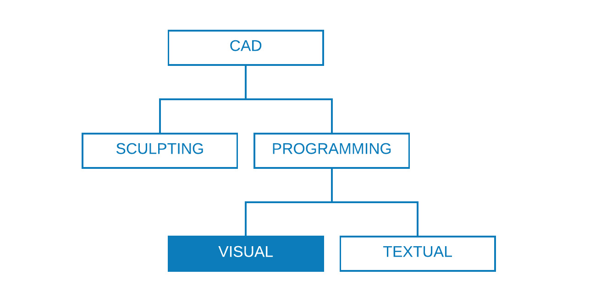
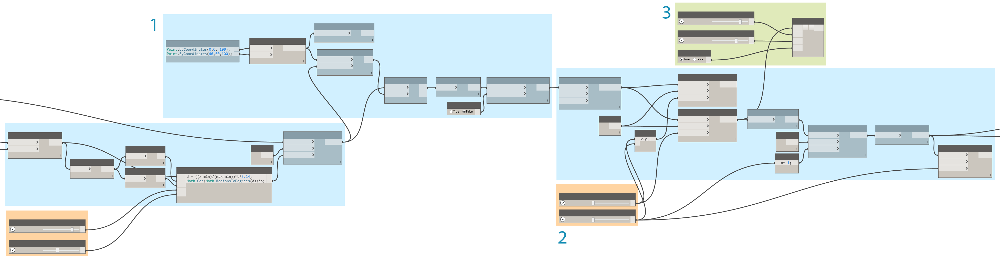
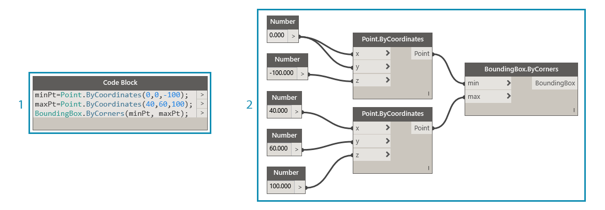
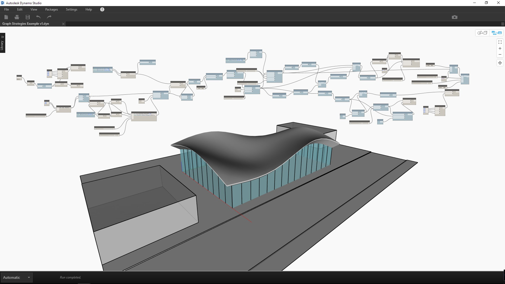
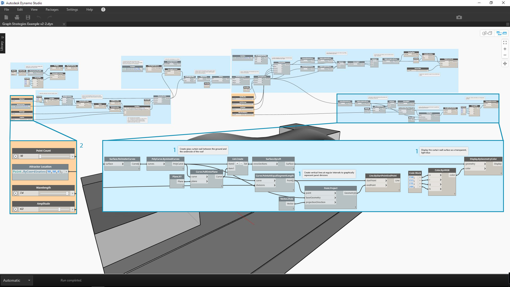

Graph Strategies
Prior to this chapter, the Primer has covered how to implement the powerful visual-scripting capabilities of Dynamo. A good understanding of these capabilities is a solid foundation and the first step in building robust visual programs. When we use our visual programs in the field, share them with colleagues, troubleshoot errors, or test limits we have additional issues to deal with. If someone else will be using your program or you are expecting to open it six months from now, it needs to have an immediate graphic and logical clarity. Dynamo has many tools to manage the complexity of your program, and this chapter will give guidelines on when to use them.

Reduce Complexity
As you develop your Dynamo graph and test ideas, it can quickly grow in size and complexity. While it is important that you create a functioning program, it is equally important to do it as simply as possible. Not only will your graph run faster and more predictably, you along with other users will understand its logic later on. The following are several ways that will help you clarify the logic of your graph.
Modularize with Groups
- Groups allow you to create functionally distinct parts as you build a program
- Groups allow you to move large parts of the program around while maintaining modularity and alignment
- You can change the color of the group to differentiate what Groups are doing (inputs vs functions)
- You can use groups to start organizing your graph to streamline Custom Node creation

The colors in this program identify the purpose of each group. This strategy can be used to create hierarchy in any graphic standards or templates you develop.
- Function group (blue)
- Input group (orange)
- Script group (green)
For how to use Groups, refer to Managing Your Program.
Develop efficiently with Code Blocks
At times, you can use a Code Block to type a number or node method faster than searching (Point.ByCoordinates, Number, String, Formula)
Code Blocks are useful when you want to define custom functions in DesignScript to reduce the number of nodes in a graph

Both 1 and 2 perform the same function. It was much faster to write a few lines of code than it was to search for and add each node individually. The code block is also far more concise.
- Design Script written in Code Block
- Equivalent program in nodes
For how to use Code Block, refer to What's a Code Block.
Condense with Node to Code
- You can reduce the complexity of a graph by using Node to Code which will take a collection of simple nodes and write their corresponding DesignScript in a single Code Block
- Node to Code can condense code without eliminating the program’s clarity
- The following are the pros of using Node to Code:
- Easily condenses code into one component that is still editable
- Can simplify a significant portion of the graph
- Useful if the ‘mini-program’ will not often be edited
- Useful for incorporating other code block functionality, like functions
- The following are the cons of using Node to Code:
- Generic naming makes it less legible
- More difficult to understand for other users
- No easy way to return to the visual programming version

- Existing program
- Code Block created from Node to Code
For how to use Node to Code, refer to Design Script Syntax.
Access data flexibly with List@Level
- Using List@Level can help you reduce the complexity of your graph by replacing List.Map and List.Combine nodes which might occupy a considerable amount of canvas space
- List@Level provides you with a quicker way than List.Map/List.Combine to construct node logic by allowing you to access data at any level in a list right from the input port of a node

We can verify how many True values BoundingBox.Contains is returning and in which lists by activating List@Level for CountTrue's "list" input. List@Level allows the user to determine at which level the input will take data from. Using List@Level is flexible, efficient, and highly encouraged over other methods involving List.Map and List.Combine.
- Counting true values at List Level 2
- Counting true values at List Level 3
For how to use List@Level, refer to Lists of Lists.
Maintain Readability
In addition to making your graph as simple and efficient as possible, strive for graphic clarity. Despite your best efforts to make your graph intuitive with logical groupings, relationships might not be readily apparent. A simple Note inside of a Group or renaming a slider can save you or another user from unnecessary confusion or panning across the graph. The following are several ways that will help you apply graphic consistency within and across your graphs.
Visual continuity with Node Alignment
- To reduce your work after you finished building your graph, you should try to ensure the node layout is legible by aligning nodes often and as you go
- If others are going to be working with your graph, you should ensure that your node-wire layout flows easily before shipping
- To help you with alignment, use the "Cleanup Node Layout" feature to automatically align your graph, though less precisely than doing it yourself

- Unorganized graph
- Aligned graph
For how to use Node Alignment, refer to Managing Your Program.
Descriptive labeling by renaming
- Renaming inputs can help others easily understand your graph, especially if what they plug into will be off the screen
- Be wary of renaming nodes other than inputs. An alternative to this is creating a custom node from a node cluster and renaming that; it will be understood that it contains something else

- Inputs for surface manipulation
- Inputs for architectural parameters
- Inputs for drainage simulation script
To rename a node, right click on its name and choose "Rename Node...".
Explain with Notes
- You should add a Note if something in the graph requires a plain language explanation that the nodes can not express
- You should add a Note if a collection of nodes or a Group is too large or complex and can’t be easily understood right away

- A Note describing the portion of the program that returns raw translation distances
- A Note describing the code that maps those values to a Sine wave
For how to add a Note, refer to Managing Your Program.
Flex Continuously
While building your visual-script, it is important to verify that what is being returned is what you expected. Not all errors or issues will cause the program to fail immediately, especially null or zero values that could affect something far downstream. This strategy is also discussed in the context of text-scripting in Scripting Strategies. The following practice will help ensure that you are getting what you expected.
Monitor data with Watch and Preview Bubbles
- Use Watch or Preview Bubbles as you build the program to verify that key outputs are returning what you expected

The Watch nodes are being used to compare:
- The raw translation distances
- The values passed through the Sine equation
For how to use Watch, refer to Library.
Ensure Reusability
It is highly likely that someone else will be opening your program at some point, even if you are working independently. They should be able to quickly understand what the program needs and produces from its inputs and outputs. This is especially important when developing a Custom Node to be shared with the Dynamo community and used in someone else’s program. These practices lead to robust, reusable programs and nodes.
Manage the I/O
- To ensure legibility and scalability, you should try and minimize inputs and outputs as much as possible
- You should try to strategize how you are going to build the logic by first creating a rough outline of how the logic could work before you even add a single node to the canvas. As you develop the rough outline, you should keep track of which inputs and outputs will go into scripts
Use Presets to embed input values
- If there are particular options or conditions that you want embedded in the graph, you should use Presets for quick access
- You can also use Presets to reduce complexity by caching specific slider values in a graph with long run times
For how to use Presets, refer to Managing Your Data with Presets.
Contain programs with Custom Nodes
- You should use a Custom Node if your program can be collected into a single container
- You should use a a Custom Node when a portion of the graph will be reused often in other programs
- You should use a Custom Node if you want to share a functionality with the Dynamo Community

Collecting the point translation program into a Custom Node makes a robust, unique program portable and far easier to understand. Well named input ports will help other users understand how to use the node. Remember to add descriptions and required data types for each input.
- Existing attractor program
- Custom Node that collects this program, PointGrid
For how to use Custom Nodes, refer to Custom Node Introduction.
Build templates
- You can build templates to establish graphic standards across your visual graphs to ensure collaborators have a standardized way of understanding graph
- When building a template, you can standardize group colors and font sizes to categorize types of workflows or data actions.
- When building a template, you can even standardize how you want to label, color, or style the difference between front-end and back-end workflows in your graph.

- The UI, or front-end, of the program includes a project name, input sliders, and import geometry.
- The back-end of the program.
- Group color categories (the general design, inputs, Python scripting, imported geometry).
Exercise - Architectural Roof
Download the example file that accompanies this exercise (Right click and "Save Link As..."). A full list of example files can be found in the Appendix. RoofDrainageSim.zip
Now that we have established several best practices, let’s apply them to a program that was put together quickly. Though the program succeeds in generating the roof, the state of the graph is a "mind-map" of the author. It lacks any organization or description of its use. We will walk through our best practices to organize, describe, and analyze the program so other users can understand how to use it.

The program is functioning, but the graph is disorganized.
Let's start by determining the data and geometry returned by the program.

Understanding when major changes to the data occur is crucial to establishing logical divisions, or modularity. Try inspecting the rest of the program with Watch nodes to see if you can determine groups before moving on to the next step.
- This Code Block with a math equation looks like a crucial piece of the program. A Watch node displays that it is returning lists of translation distances.
- The purpose of this area isn't readily obvious. The arrangement of True values at list level L2 from BoundingBox.Contains and the presence of List.FilterByBoolMask suggests we are sampling a portion of the point grid.
Once we understand the elemental parts of the program, let's put them in Groups.

Groups allow the user to visually differentiate the parts of the program.
- Import 3D site model
- Translate point grid based on Sine equation
- Sample portion of point grid
- Create architectural roof surface
- Create glass curtain wall
With Groups established, align the nodes to create visual continuity across the graph.

Visual continuity helps the user to see the program flow and implicit relationships between nodes.
Make the program more accessible by adding another layer of graphic improvements. Add notes to describe how a specific area of the program works, give inputs custom names, and assign colors to different types of groups.

These graphic improvements tell the user more about what the program is doing. The different group colors help to distinguish inputs from functions.
- Notes
- Inputs with descriptive names
Before we start to condense the program, let's find a strategic location to introduce the Python script drainage simulator. Plug the output of the first scaled roof surface into the respective scripting input.

We've chosen to integrate scripting at this point in the program so the drainage simulation can be run on the original, single roof surface. That specific surface is not being previewed, but it saves us from having to choose the top surface of the chamfered Polysurface.
- Source geometry for script input
- Python node
- Input sliders
- On/off "switch"
Let's simplify the graph now that everything is in place.

Condensing our program with Node to Code and Custom Node has greatly reduced the size of the graph. The groups that create the roof surface and walls have been converted to code since they are very specific to this program. The point translation group is contained in a Custom Node as it could be used in another program. In the example file, create your own custom node from the translate points group.
- Custom Node to contain the "translate point grid" group
- Node to Code to condense the "create architectural roof surface and curtain wall" groups
As a final step, create presets for exemplary roof forms.

These inputs are the primary drivers of the roof form and will help users see the potential of the program.
Our program with views of two presets.


The roof drainage patterns give the user an analytical view of the respective presets.